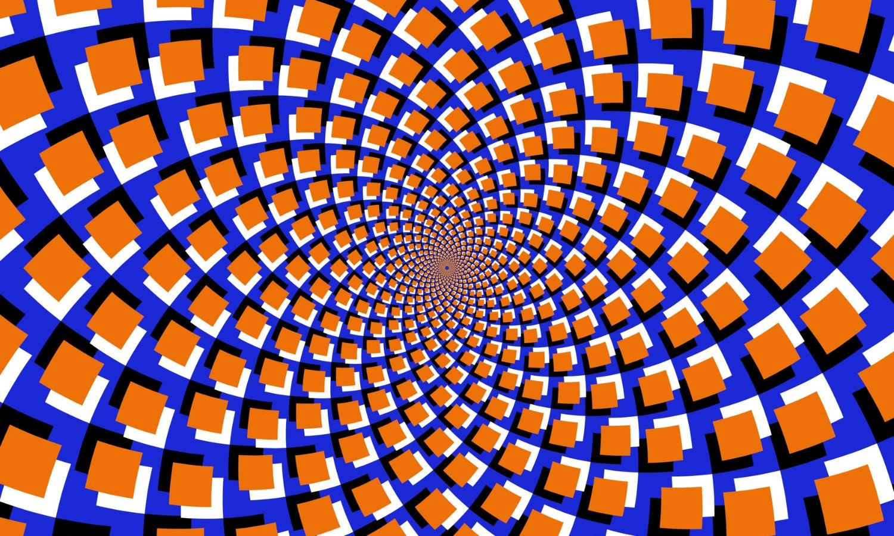

La importancia de limitar nuestro tiempo en el ordenador
¿Por qué es importante moderar nuestro tiempo frente a las pantallas?
Estas son las razones:
Es nocivo para la vista y la salud.
Comer zanahorias ayuda a mejorar la vista
